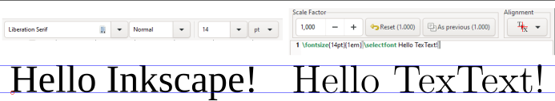

Frequently Asked Questions (FAQ)¶
Defining keyboard shortcut for opening TexText dialog¶
In Inkscape open
Edit->Preferences->Interface->Keyboard ShortcutsFind the TexText entry in the
ExtensionscategoryWithin the
Shortcutcolumn click next to the TexText entry. An entry New accelerator appears in theShortcutcolumn.Now type the keyboard shortcut you intend to use, e.g.
CTRL+T. Inkscape informs you if the shortcut is already in use.
Explicit setting of font size¶
If you want the font size of your compiled LaTeX code to be of a specific size then you have to do two things:
Set the scale factor of the node to 1.0
Enter your code as following if you want to have a
14ptsized font for the text This is my Text:
\fontsize{14pt}{1em}{\selectfont This is my Text.}
The resulting text should be of equal height as if has been typeset directly in Inkscape.

Selection of special fonts¶
Usually your code is typeset in the LaTeX standard fonts. As usual, you
can use commands like \textbf{}, \textsf{} etc. in your code. If
you want to select a special font, e.g. the beloved Times New Roman
from MS Word, then proceed as follows:
Open the file
default_packages.texwhich resides in the extension subdirectory (%USERPROFILE%\AppData\Roaming\Inkscape\extensions\textexton Windows,~/.config/inkscape/extensions/textexton Linux) and enter the following two lines:
\usepackage{fontspec}
\setmainfont{Times New Roman}
Save the file and recompile your node. You can also define different preamble files and load them dependent on your node, see Dialog overview.
Using special characters like German Umlaute (äüö) etc.¶
If you want to use special characters which are not understood by plain LaTeX in your nodes you have two options:
Include the directive
\usepackage[utf-8]{inputenc}in the preamble file, see Preamble file.Use
xelatexorlualatexas TeX command, see Available TeX compilers.
Using TexText with Inkscape 0.92.x¶
Please use TexText 0.11.x, see Installation (Inkscape 0.92)
Windows with MiKTeX: Compilation fails with empty error dialog¶
If the compilation of your LaTeX code fails with an empty error dialog and the expanded
view of stderr (see LaTeX and toolchain errors) shows an entry like
Sorry, but pdflatex.exe did not succeed.
The log file hopefully contains the information to get MiKTeX going again:
the most likely reason is that MiKTeX tries to install a package on the fly and fails to do so. Manually compile your code as described in Manual use of the toolchain. Then you will see what goes wrong so you can fix it. See also the warning in Preparation.